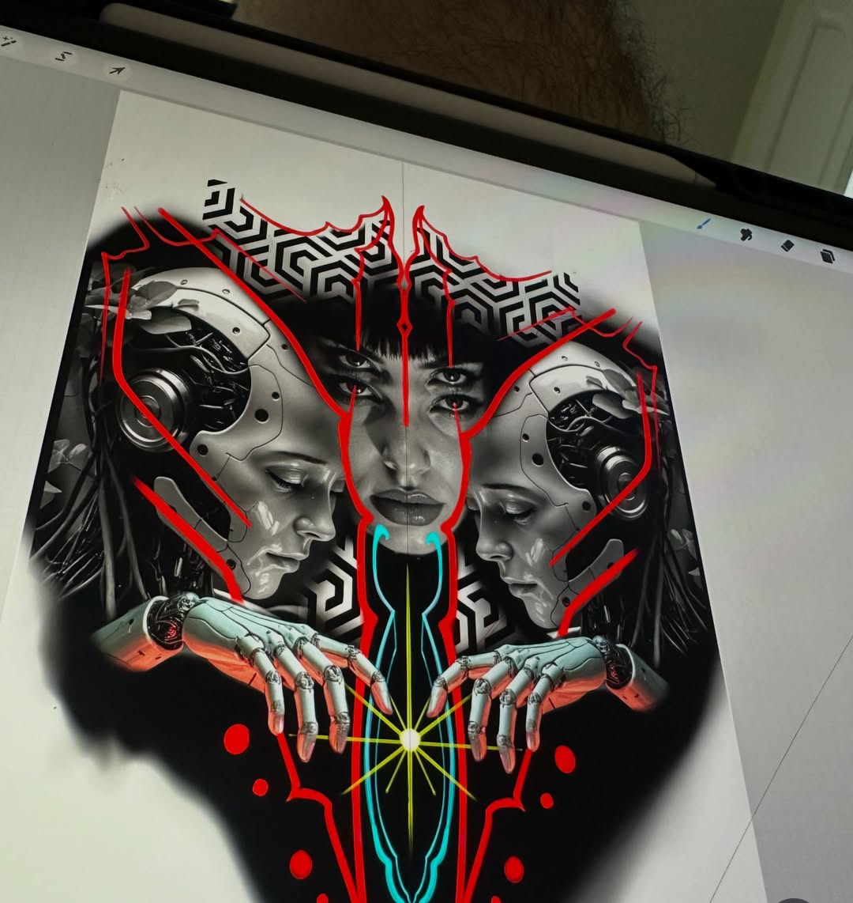
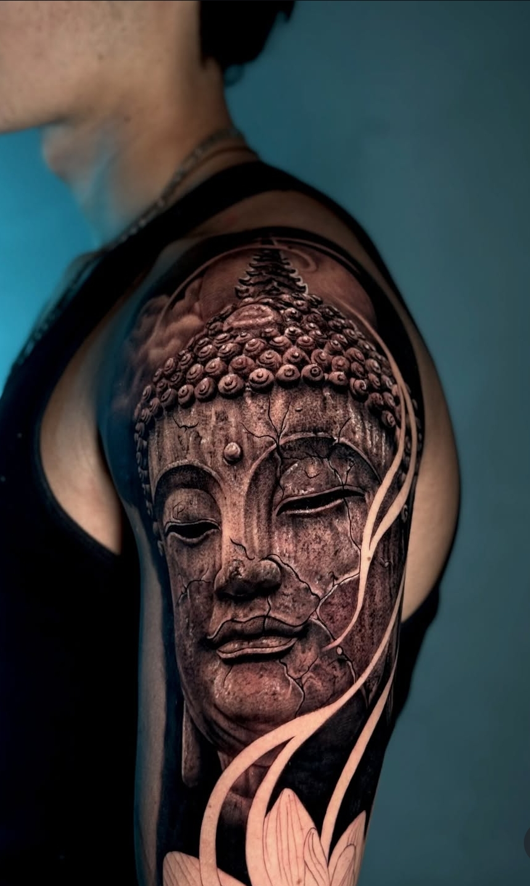
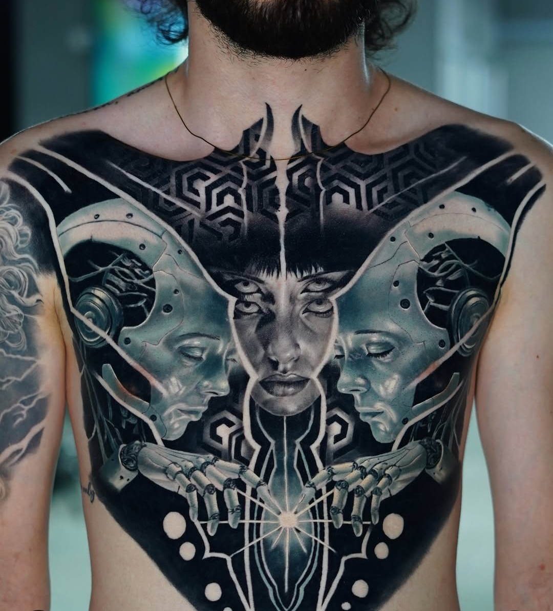
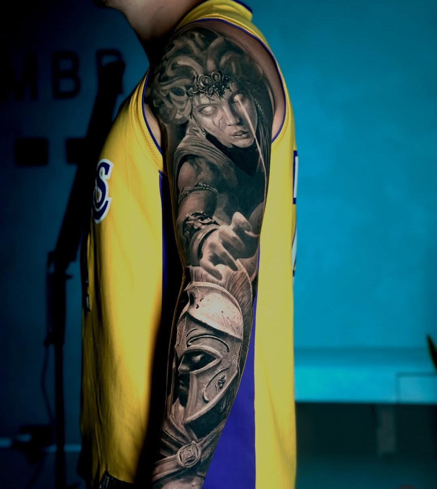
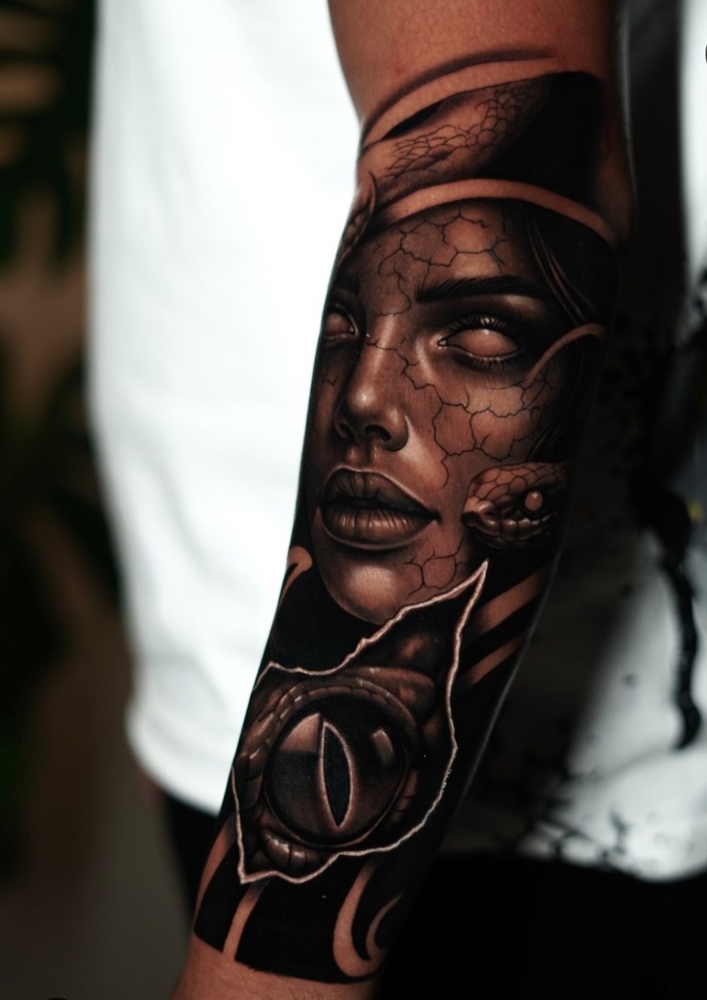
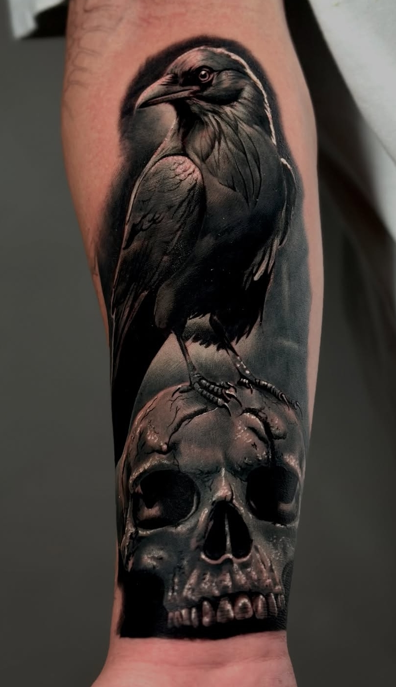
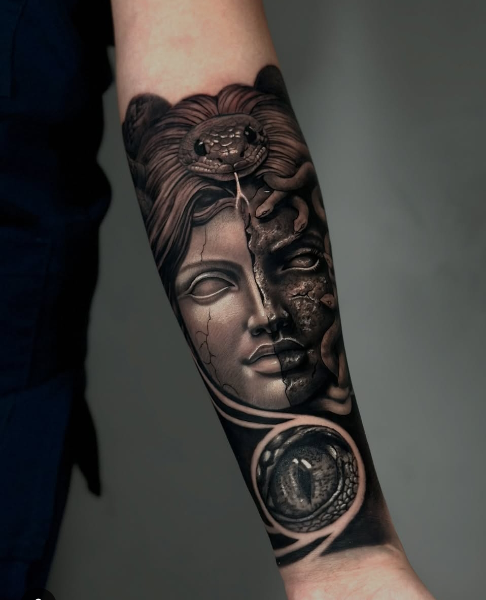
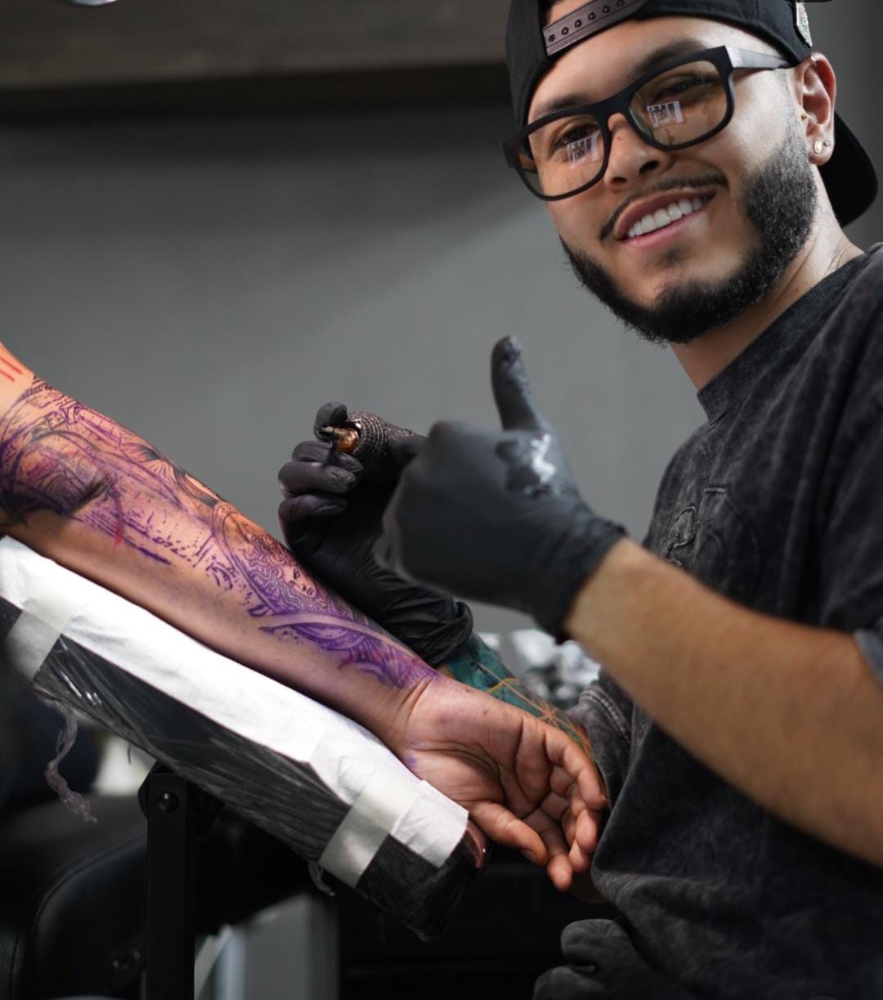
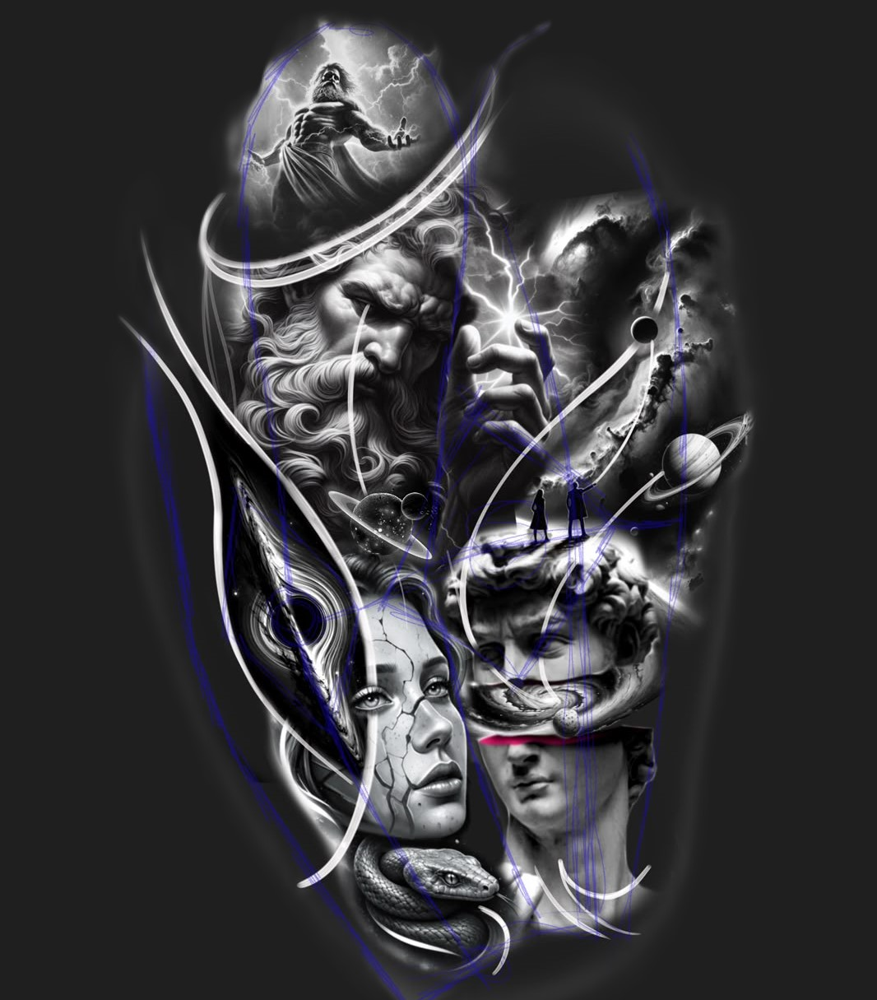
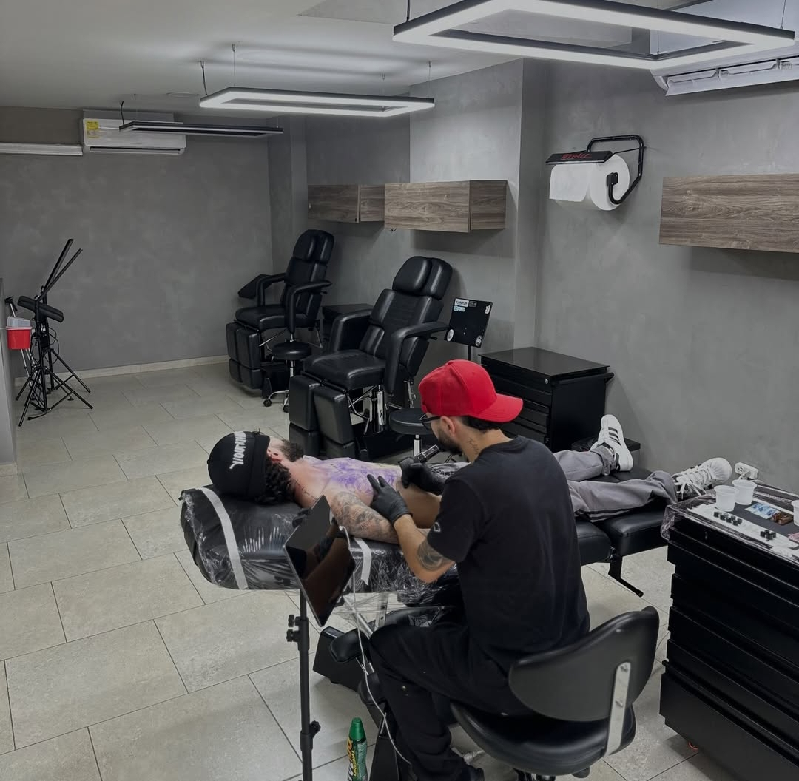

Tu idea

Cuéntanos qué tienes en mente, incluso si todavía es solo una idea.
MEDELLÍN · COLOMBIA
Convierto tu historia en sombras eternas a través del arte
Cuéntanos tu ideaPORTAFOLIO
Cada pieza nace de una idea diferente. Exploro distintos estilos para crear tatuajes que tengan significado.







EL ARTISTA
Cada tatuaje comienza con una idea. Me encargo de transformar esa idea en una pieza diseñada específicamente para ti.
Me enfoco en el detalle, la composición y en crear tatuajes que tengan significado.
ESPECIALIDADES
Retratos y piezas con profundidad, luz y textura de piel real.
Rostros y expresiones capturados con precisión fotográfica.
Mangas y espaldas completas, composiciones que cuentan una historia.
PROCESO

Cuéntanos qué tienes en mente, incluso si todavía es solo una idea.
Definimos el estilo, tamaño, ubicación y todos los detalles.

Creamos una propuesta pensada específicamente para ti.

Es momento de convertir la idea en una pieza real.
CUIDADOS
Un buen cuidado es tan importante como el diseño. Sigue estas indicaciones para que tu tatuaje cicatrice bien y conserve su color.
Deja el vendaje puesto entre 2 y 4 horas, según indique tu tatuador.
Lava la zona con agua tibia y jabón neutro, sin frotar.
Seca con toques suaves usando una toalla limpia o papel absorbente.
No expongas el tatuaje al sol ni a piscinas o mar.
No uses ropa ajustada que roce directamente la zona.
Aplica crema cicatrizante 2-3 veces al día, en capa fina.
Mantén la piel hidratada, pero sin encharcarla de crema.
No rasques ni arranques las costras que se vayan formando.
Evita ejercicio intenso que genere sudoración excesiva sobre la zona.
Continúa hidratando la piel a diario, incluso cuando ya no veas descamación.
Usa protector solar sobre el tatuaje una vez esté completamente cicatrizado.
No te preocupes si ves la piel algo opaca o reseca, es normal en esta fase.
Si notas enrojecimiento excesivo, calor o secreción, contáctanos de inmediato.
CONTACTO
Cuéntanos qué tienes en mente y hagámoslo realidad.
Solicitar cotización+57 300 238 9080
@danieltatto._ink
Medellín, Colombia